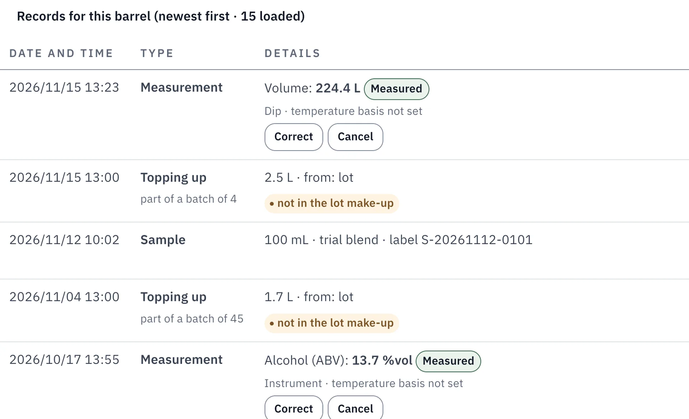
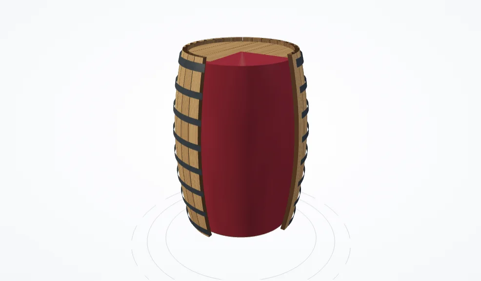
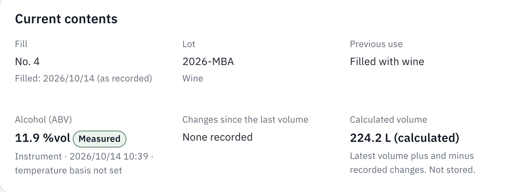
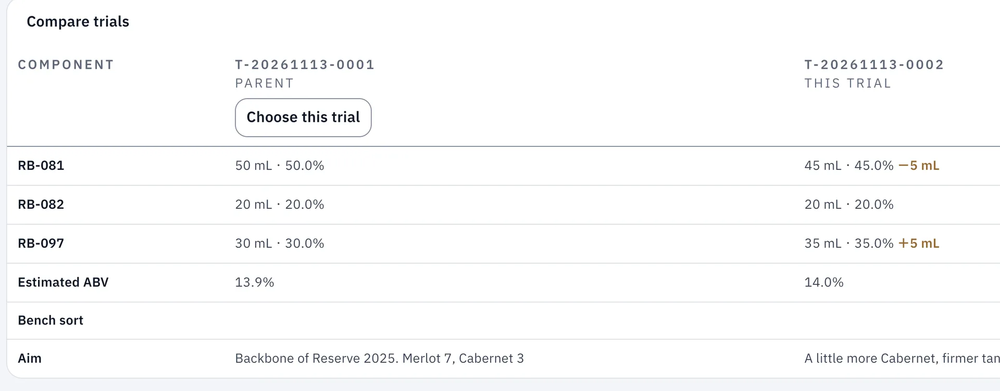

Record topping up in bulk, room by room
Narrow the barrels down by location (room) or lot, and record the same topping up in bulk. How many litres were added to which barrel, and from which lot, is kept barrel by barrel.

Wineries
Topping up, lots, fill count and barrel status can be kept as a record for each barrel. Winemaking differs from winery to winery, so we talk it through and fit the setup to yours.

A record for each barrel
The record of each barrel can build up alongside the work in the cellar.
Narrow the barrels down by location (room) or lot, and record the same topping up in bulk. How many litres were added to which barrel, and from which lot, is kept barrel by barrel.

The barrel detail shows the lot it holds, which fill it is on, and what the barrel held before.

Each time a barrel is filled, its fill count goes up by one, and the lots of its earlier fills are kept for each barrel. How a barrel was used before records began can be kept as its history of use (new or reused, for example). Its status, such as empty, being cleaned or under repair, is kept with the reason for each change.
In the Blending Lab (optional), assemblage trials can be changed one thing at a time and compared side by side. From a sample bottle, the barrel’s record and the previous tasting open.

Alongside your current records
It handles barrels and lots, topping up, transfers and barrel status. Winemaking differs from winery to winery, so we talk it through and fit the setup to yours.
It depends on how the barrels are stored. We check this in the on-site read check, before you buy. Racks that read poorly are managed with the QR code on the tag or the barrel number, together with the location record.
It does not replace them. It starts with barrel locations and topping-up records. How to bring in the lists you use now, and how to connect, is decided case by case as we go through the items.
This opens our contact form. Under Topic, please choose “CASK / BARREL (early adopter enquiry)”. If you cannot choose it, please mention “CASK / BARREL” in your message.